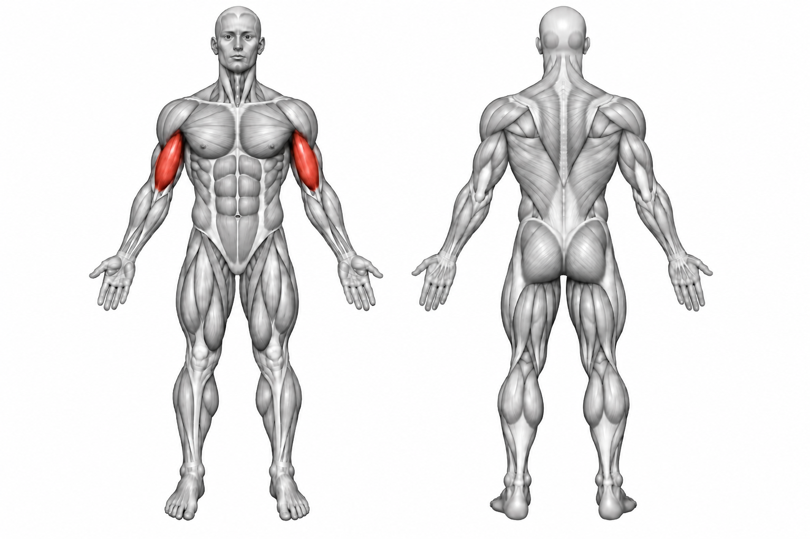
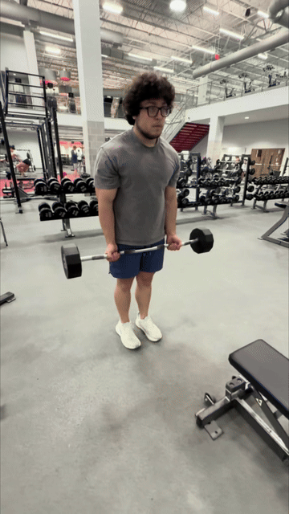

EZ-Bar Curl


How to Perform
Stand with your feet about shoulder-width apart while holding the EZ-bar with a comfortable underhand grip. Keep your elbows close to your sides and your torso upright.
Curl the bar upward by bending your elbows without swinging your torso. Squeeze your biceps at the top, then lower the bar under control to the starting position.
Primary Muscles
Biceps brachii (Biceps)
Secondary Muscles
Brachialis (Biceps) and brachioradialis (Forearms)